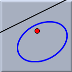
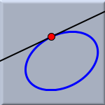
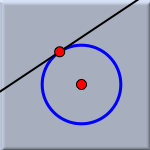

Polar of a Point

This mode has a few very interesting special cases that deserve some extra attention. If the point is on the conic itself, then the unique tangent to the conic that passes through that point is constructed. Even more special, if the conic is a circle and the point lies on the circle, then the tangent to the circle that passes through the point is constructed. Although this mode gives access to general polars, this special case will most probably be its main application.
 |  |  | ||
| General Polar | Tangent to conic | Tangent to circle |
Synopsis
The polar line of a point with respect to a conic is constructed by selecting a point and a conic.
Page last modified on Thursday 28 of July, 2011 [08:38:43 UTC].
The original document is available at
http://doc.cinderella.de/tiki-index.php?page=Polar%20of%20a%20Point